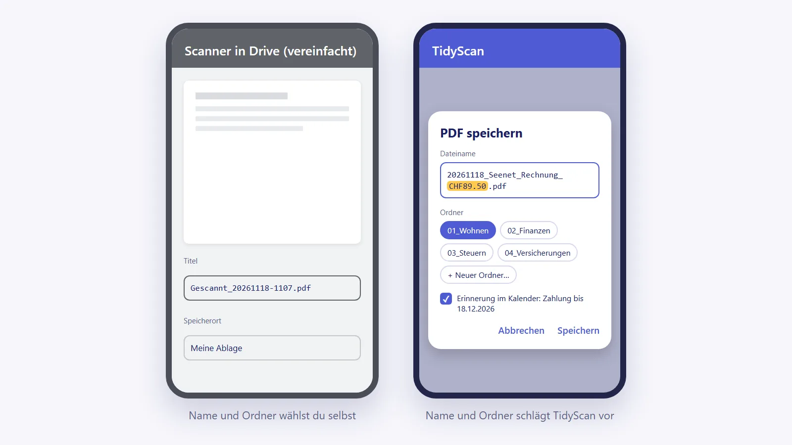

Google Drive Scanner oder TidyScan: der ehrliche Vergleich
Aktualisiert am 18. November 2026 · Silvan, Gründer von TidyScan · 6 Min. Lesezeit
Wer ein Android-Handy hat, hat meistens schon einen Dokumentenscanner: den Google Drive Scanner in der Drive-App. Warum also eine eigene App? Die ehrliche Antwort: Für viele reicht der Google Drive Scanner. Diese Seite zeigt, was er gut kann, wo er aufhört und wann sich TidyScan lohnt.
Geschrieben vom Entwickler von TidyScan, also nicht neutral. Ich habe versucht, fair zu sein. Die Angaben zu Google stammen aus der offiziellen Drive-Hilfe und einem eigenen Test (Stand 18. November 2026).
Was der Google Drive Scanner gut kann
- Gratis und schon da. Kamerasymbol in der Drive-App antippen, fertig.
- Gute Scans. Automatische oder manuelle Aufnahme, Zuschneiden und Drehen, Filter und eine Funktion, die Flecken und Finger entfernt.
- Mehrere Seiten in einem Dokument.
- Durchsuchbar. Laut Google speichert Drive Scans als durchsuchbare PDFs.
- Ordner wählbar. Beim Speichern lässt sich ein Drive-Ordner wählen. Auf Android scannt ein Widget direkt in einen festen Ordner.
- Android und iPhone. Die Funktion gibt es in beiden Drive-Apps.
Wo der Google Drive Scanner aufhört
Der Google Drive Scanner ist ein Scanner. Die Ablage überlässt er dir:
- Kein Namensschema. Was im Dateinamen steht, entscheidest du bei jedem Scan selbst. Titelvorschläge hat Google 2023 nur für die USA angekündigt. Bei unserem Test in der Schweiz hiess der Scan schlicht
Gescannt_20261118-1107.pdf. - Ordner von Hand. Drive entscheidet nicht anhand des Inhalts, ob eine Rechnung zu «Wohnen» oder «Versicherungen» gehört.
- Nur Google Drive. Der Scan landet immer in Drive.
- Keine Fristen. Eine Zahlungsfrist auf der Rechnung bleibt eine Zahl auf dem Papier.

Was TidyScan anders macht
TidyScan nutzt zum Scannen den Dokumentenscanner von Google (ML Kit): Kantenerkennung, Zuschneiden und Filter sind darum ähnlich wie beim Scannen mit Google Drive. Der Unterschied liegt in allem danach:
- Name nach Schema, automatisch:
20261118_Swisscom_Rechnung_CHF89.50.pdf, offline erkannt (siehe Dokumente richtig benennen). - Ordner nach Inhalt: mehrere Smart-Ordner mit Stichworten. Die App wählt, du bestätigst.
- Schweizer QR-Rechnung: Empfänger und Betrag aus dem QR-Code, Frist als Kalendereintrag.
- Aus E-Mails ablegen: PDF-Anhänge über «Teilen» nach demselben Schema ablegen.
- Speicherort frei: Handy, Google Drive oder ein anderer Speicher. TidyScan hat keine eigene Cloud (siehe Dokumente scannen ohne Cloud).
- Lernt aus Korrekturen, etwa die Schreibweise eines Absenders.
TidyScan erscheint in Kürze bei Google Play.
Was TidyScan nicht kann
- Noch kein durchsuchbares PDF. Der Text der Seite wird nicht in der Datei gespeichert. Gefunden wird ein Dokument über den Dateinamen und die PDF-Angaben (Titel, Autor, Stichworte), die TidyScan ausfüllt.
- Nur Android. Den Google Drive Scanner gibt es auch für iPhone und iPad. Eine iPhone-Version von TidyScan ist in Planung.
- Kostenlos nutzbar, Extras im Abo. Scannen, Offline-Benennung, QR-Rechnung, Fristen und ein Ordner sind gratis. Mehr Ordner und mehr KI-Benennungen kannst du dazubuchen.
Google Drive Scanner und TidyScan auf einen Blick
| Google Drive Scanner | TidyScan | |
|---|---|---|
| Preis | gratis | gratis, Extras im Abo |
| Scannen | sehr gut | sehr gut (Google ML Kit) |
| Dateiname | von Hand (Vorschläge nur USA) | automatisch nach Schema |
| Ordnerwahl | von Hand oder fester Widget-Ordner | automatisch nach Inhalt |
| Speicherort | nur Google Drive | frei wählbar, auch Google Drive |
| QR-Rechnung, Betrag im Namen | nein | ja |
| Frist im Kalender | nein | ja |
| E-Mail-Anhänge ablegen | Upload nach Drive | Teilen, benannt und abgelegt |
| Durchsuchbares PDF | ja | noch nicht |
| Plattform | Android, iPhone | Android (iPhone in Planung) |
Welche Scan-App für wen?
Der Google Drive Scanner reicht, wenn du ein paar Dokumente pro Monat scannst, sie ohnehin in einem einzigen Ordner sammelst und dir die Namen egal sind.
TidyScan lohnt sich, wenn regelmässig Rechnungen und Briefe kommen, du sie in mehreren Ordnern ablegst und sie später ohne Suchen wiederfinden willst, vor allem mit Schweizer QR-Rechnungen. Wer eine CamScanner Alternative ohne Konto sucht, ist hier ebenfalls richtig.
Beides zusammen geht auch: TidyScan scannt, benennt und legt in einen Google-Drive-Ordner ab, Drive übernimmt Synchronisation und Backup.
Warum ich TidyScan gebaut habe
Mit Google Drive als Zielordner war ich grundsätzlich zufrieden. Aber den richtigen Namen tippen und den richtigen Ordner wählen war mir bei jedem Dokument zu umständlich und zu zeitraubend. Genau das hat mich dazu gebracht, TidyScan zu entwickeln. Weil es so gut funktioniert hat und ich mir vorstellen kann, dass andere dasselbe Problem haben, habe ich mich entschieden, es als App zu veröffentlichen. Heute scanne ich mit TidyScan und speichere in meine Ordner auf Google Drive.
Fazit: Scanner oder Ablage?
Der Google Drive Scanner ist ein sehr guter Gratis-Scanner. TidyScan setzt dort an, wo er aufhört: beim Namen, beim Ordner und bei der Frist. Wenn du mit Google Drive scannen und trotzdem eine saubere Ablage willst, kombinierst du am besten beides. Wie die passende Ordnerstruktur aussieht, steht im Ratgeber Ordnerstruktur mit Vorlage, alle Funktionen von TidyScan auf der Startseite.
Quellen
- Google-Drive-Hilfe: Dokumente mit Google Drive scannen (abgerufen am 18.11.2026)
- Google Workspace Updates: Updates to the Google Drive scanner on Android & iOS devices (28.11.2023)
- Eigener Test mit der Drive-App auf Android in der Schweiz, 18.11.2026
Google Drive ist eine Marke von Google LLC. TidyScan ist ein unabhängiges Produkt und nicht mit Google verbunden.
Häufige Fragen
Wo finde ich den Google Drive Scanner?
In der Google-Drive-App auf Android: das Kamerasymbol unten rechts. Auf dem iPhone über «Neu» und «Scannen». Auf Android gibt es zusätzlich ein Widget, das direkt in einen festen Ordner scannt.
Schlägt der Google Drive Scanner in der Schweiz Dateinamen vor?
Bei unserem Test am 18. November 2026 nicht: Der Scan hiess «Gescannt_20261118-1107.pdf». Google hat die Titelvorschläge 2023 nur für die USA angekündigt.
Ist TidyScan eine CamScanner Alternative?
Ja, für alle, die vor allem Rechnungen und Briefe ablegen wollen. TidyScan braucht kein Konto, hat keine eigene Cloud und benennt offline.
Kann ich TidyScan und Google Drive zusammen nutzen?
Ja. TidyScan speichert direkt in einen Google-Drive-Ordner, Drive übernimmt Synchronisation und Backup.